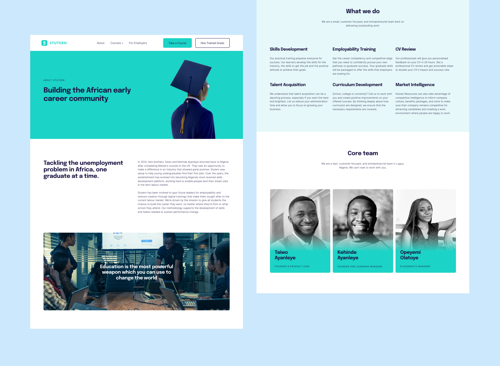

Betty Bingo
Teaching Africa how to play
Globally there is a balance between Sports and Casino/Bingo/Poker. However in Nigeria and Africa as at early 2018, over 90% of gambling proceeds were from Sports Betting or Lottery. Also, the players were predominantly male.
No one was Bingo+Slots focused. Betty intended to be the first to bring real money gaming entertainment to a female first audience across Africa.
Problem Space
No one knew what Bingo was. Out of a survey filled by 87 people only 2 people indicated that they had heard about the game before and that it involved numbers. Neither of these 2 actually knew how to play.
Solution
Use tools (onboarding and videos) to teach players how to play while also providing them with the most thrilling online gaming entertainment experience possible, in the safest and most secure environment.
Impact & Outcomes
Increase in the number of registrations. More jackpot winners. Higher customer retention an acquisition of new customers.
Role
I joined Betty as a product designer but was promoted to Design Manager in 9 months. I was responsible for end-to-end creative direction of the website and web campaigns, from defining complex user-stories, wire-frames and prototyping to visual design.
Tools
Figma + Photoshop for UI Design, Google Form for Surveys, Proto for Prototyping
Understanding the Users
Betty Bingo from inception had always set out to capture a demographic that seemed to be left out of monetary gaming in Africa: women. I did some research by exploring the material sports betting and lottery companies put out and ascertained that the marketing was tailored to men. The interfaces of their sites were usually darker. With the TV ads, the language was 'grittier' and more direct.
But what do women want? In order to gain a better understanding, I conducted user research by speaking with 11 women who cut across a wide range of interests.
Synthesing the data from the conversations with these women highlighted 5 key points:
Based on these points I created a persona
Research: The Edtech Industry
Stutern’s services had evolved over time, but understandably - the site had not. The lean (and extremely busy) team prioritises the wellbeing, development and success of their learners above everything else. A look at their Trello boards, and I was in awe of how much work they churned out.
I began by evaluating the edtech industry. What companies are in the market? What courses do they offer? What are their business models? It was an interesting starting point that provided a lot of perspective and context.
After that I went on to perform a thorough analysis of the website, exploring what existed and where there was room for further development. A few things were noted:
Problem Definition
Stutern did not have the information that prospective learners needed to make their application process fast and seamless.
Use Cases
I interviewed 18 people, ranging from people who had no prior knowledge of how Stutern worked to users who had already enrolled for one of their programs. I also inerviewed staff repsonsible for responding to email and phonecall enquiries, as well as staff who had worked on managing previous cohorts the company had trained. With the information gathered, I was able to define relevant personas.
Feature Narrative
To create an experience that makes it easy for prospective learners to choose a course of study and apply for this course easily. The key elements to achieve these are:
Homepage
I spent a lot of time designing this page because the old site had a high bounce rate and it was important I worked on getting the percentage down. From the conversations we had had with learners (current & prospective), it was clear what the key points where and I did my best to design to 'sell' Stutern to them.
Other Pages
I spent a lot of time designing this page because the old site had a high bounce rate and it was important I worked on getting the percentage down. From the conversations we had had with learners (current & prospective), it was clear what the key points where and I did my best to design to 'sell' Stutern to them.
Social Media
I had to combine some graphic design and marketing skills to increase traffic and help push the number of applications for the upcoming cohort. I used my graphic design skills to create pages & posts that would appeal to our target audience and used my experience with marketing to determine what content was appropriate and supported how the company wanted to position itself.

Final Notes
All in all, I really enjoyed working with the team and doing impactful work. The engagement on the support lines reduced drastically as prospective learners had most of the information they needed to make their decisions. Average weekly phone calls dropped by about 60% while emails dropped by 74%! To see the impact of how proper information presentation helps business operations in real life was very rewarding.
At the end of February 2020, I will update this post to reflect what the conversion rate was (comparing the ratio of learners that applied to learners that enrolled). Although, looking at the numbers and trends from previous cohorts, I can tell confidently that the outcome looks very promising.